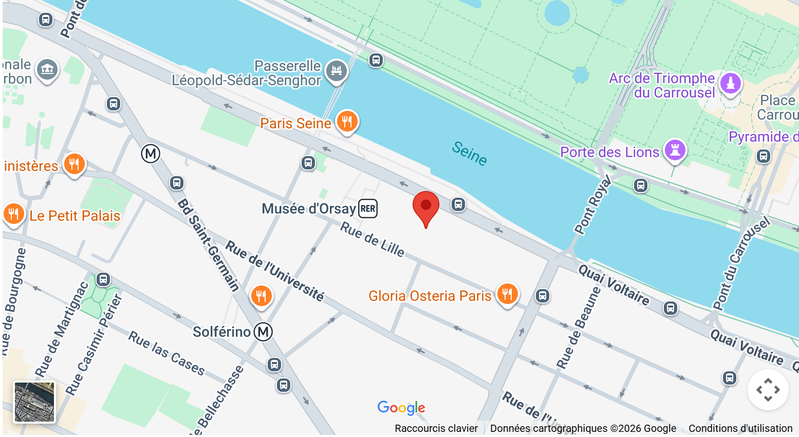

Dès 13h00 — Ouverture
Accueil & visite libre
Ouverture des portes. Découverte libre de l'exposition permanente et des espaces dédiés aux flops de l'histoire.
🚪 Entrée libre"Et si les pires inventions étaient les plus intéressantes ?"
📅 Du 12 mars au 30 mai 2027 · Musée des Arts et Métiers, Paris
Chaque grande invention cache derrière elle une longue série d'échecs. Des prototypes ratés, des idées abandonnées, des projets moqués par leurs contemporains — et pourtant essentiels au progrès.
L'exposition « Flop ou pas ? » propose de renverser le regard : et si ce que l'on appelle un échec était en réalité la condition nécessaire de toute réussite ? À travers des objets insolites, des archives inédites et des installations interactives, le musée invite ses visiteurs à reconsidérer leur rapport à l'erreur.

Plus de deux mois pour explorer, questionner et voter. Voici un aperçu du programme de l'édition 2027 au Musée des Arts et Métiers.
Dès 13h00 — Ouverture
Ouverture des portes. Découverte libre de l'exposition permanente et des espaces dédiés aux flops de l'histoire.
🚪 Entrée libreLes lundis — Conférence
Un historien des sciences retrace les inventions qui ont d'abord été des flops avant de devenir indispensables.
🎤 ConférenceLes mercredis — Atelier
Atelier créatif en groupe : imaginez et construisez l'invention la plus inutile possible. Le public vote pour le flop ultime.
🛠️ Atelier participatifLes samedis — Débat
Présentation des 10 inventions les plus controversées du musée. Le public vote en direct : flop ou génie incompris ?
🗳️ Vote publicLes dimanches — Table ronde
Des créateurs contemporains témoignent de leurs propres échecs et de ce qu'ils leur ont appris.
💬 Table ronde30 Mai — Clôture
Le public désigne l'invention la plus ratée de l'année. Cérémonie festive et cocktail de clôture.
🏆 CérémonieFondé en 1794, le Musée des Arts et Métiers conserve des collections scientifiques et techniques exceptionnelles. Rattaché au Cnam, il accueille plus de 80 000 objets et constitue le cadre idéal pour questionner l'innovation et ses détours.
